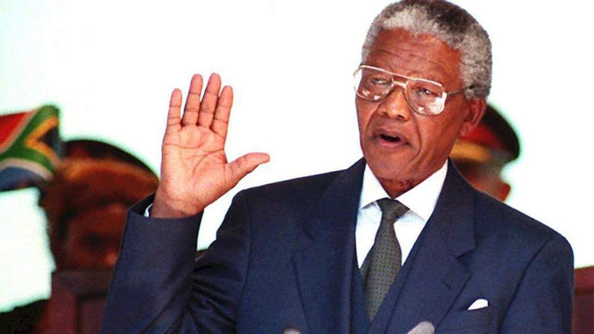

History Of Nelson Mandela

Nelson Mandela speaking on stage
Nelson Mandela's life timeline
-
Birth Date and place
Mandela was born on 18 July 1918 in the village of Mvezo in Umtata, then part of South Africa's Cape Province. -
Clarkebury, Healdtown, and Fort Hare: 1934–1940
Intending to gain skills needed to become a privy councillor for the Thembu royal house, Mandela began his secondary education in 1933 at Clarkebury Methodist High School in Engcobo, a Western-style institution that was the largest school for black Africans in Thembuland. -
Arriving in Johannesburg: 1941–1943
Returning to Mqhekezweni in December 1940, Mandela found that Jongintaba had arranged marriages for him and Justice; dismayed, they fled to Johannesburg via Queenstown, arriving in April 1941. -
Law studies and the ANC Youth League: 1943–1949
Mandela began studying law at the University of the Witwatersrand, where he was the only black African student and faced racism. There, he befriended liberal and communist European, Jewish and Indian students, among them Joe Slovo and Ruth First. -
MK, the SACP, and African tour: 1961–62
Disguised as a chauffeur, Mandela travelled around the country incognito, organising the ANC's new cell structure and the planned mass stay-at-home strike. Referred to as the "Black Pimpernel" in the press—a reference to Emma Orczy's 1905 novel The Scarlet Pimpernel—a warrant for his arrest was put out by the police. -
General election: 1994
With the election set for 27 April 1994, the ANC began campaigning, opening 100 election offices and orchestrating People's Forums across the country at which Mandela could appear, as a popular figure with great status among black South Africans. -
Continued activism and philanthropy: 1999–2004
Retiring in June 1999, Mandela aimed to lead a quiet family life, divided between Johannesburg and Qunu. Although he set about authoring a sequel to his first autobiography, to be titled The Presidential Years, it was abandoned before publication. -
"Retiring from retirement": 2004–2013
In June 2004, aged 85 and amid failing health, Mandela announced that he was "retiring from retirement" and retreating from public life, remarking, "Don't call me, I will call you." -
Illness and death: 2011–2013
In February 2011, Mandela was briefly hospitalised with a respiratory infection.After suffering from a prolonged respiratory infection, Mandela died on 5 December 2013 at the age of 95.